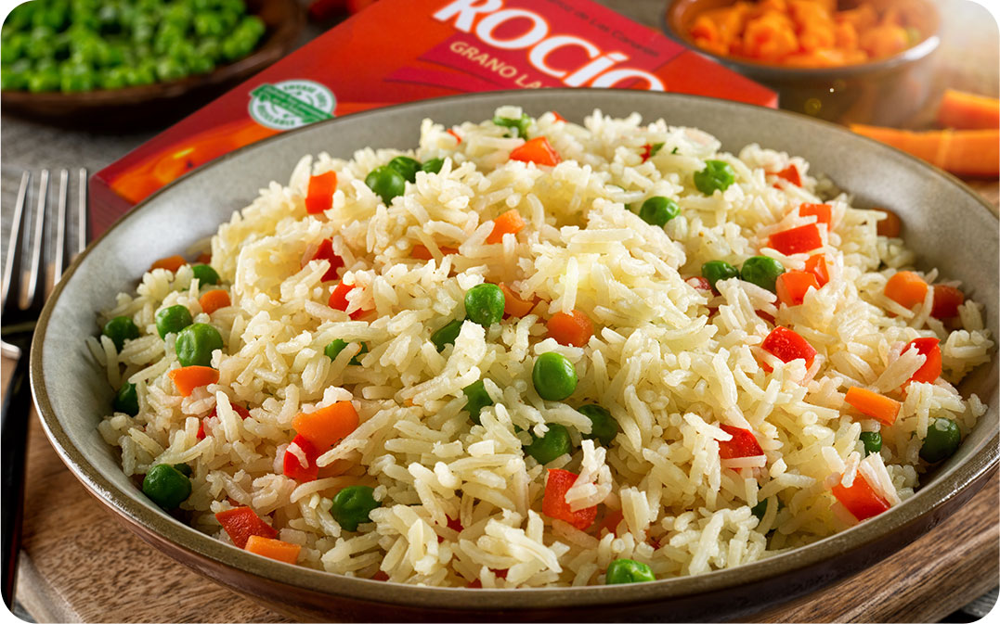

las mejores recetas de cocina
como hacer el mejor arroz
ingredientes
- arroz
- agua
- verduras
- aceite
- sal
proceso
por cada tazon de arroz agregue medio vaso de agua y dejelo hervir por media hora, cuando el arroz este blanco agregue las verduras cortadas cortadas en cuadritos y agregue aceite tambien, al final cuando ya este cocido agrega un toque de sal al gusto

como hecer pollo encebollado
ingredientes
- pollo
- cebolla
- aceite
- aceite
- pimientas
- sal
proceso
En una cacerola agregue y pongalo a cocer, cuando el pollo esta blanco
como hacer spaguetti
ingredientes
- spaguetti
- cilantro
- salsa de tomate
- pimientos
- sal
proceso
En una cacerola agregue el spaguetti con la salsa de tomate y espere a que este comienze a hervir
como hecer sopa de pollo
ingredientes
- arroz
- agua
- verduras
- aceite
- sal
proceso
por cada tazon de arroz agregue medio vaso de agua y dejelo hervir por media hora, cuando el arroz este blanco agregue las verduras cortadas cortadas en cuadritos y agregue aceite tambien, al final cuando ya este cocido agrega un toque de sal al gusto